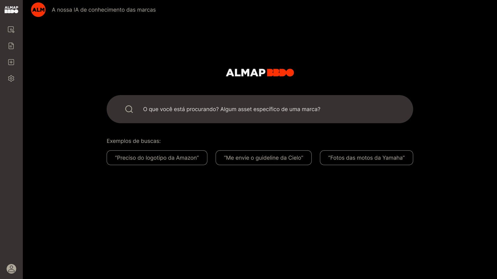
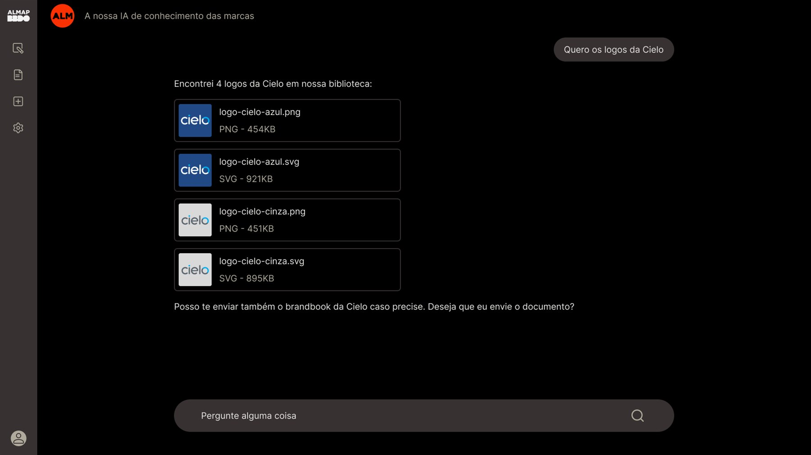
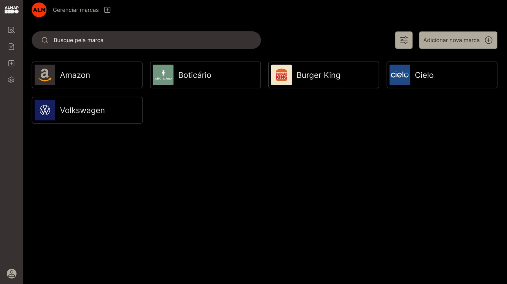

Nossa cliente, a Almap, estava em um processo de transformar (e criar) soluções com o uso de inteligência artificial através das tecnologias e propostas do Distrito. Nesse projeto, depois de pesquisas (majoritariamente focus groups) com o mais alto escalão da agência, chegamos à conclusão de criar um chat geracional de IA que trouxesse insumos aos colaboradores. Toda a experiência e design system foram trazidos à vida com uma meticulosa imersão em sua identidade visual.
Sendo uma agência de publicidade com inúmeros clientes, a Almap precisava sempre ter acesso aos logos e identidades visuais dos demandantes para a criação de artes e campanhas; até tinham um banco de dados com essas informações, mas tudo ficava em um documento de difícil usabilidade e, assim sendo, preferiam buscar manualmente na internet esses assets.
Precisávamos criar uma solução que trouxesse, de maneira instantânea, qualquer tipo de informação que os colaboradores precisassem. Além desse repertório — já presente no documento da agência —, essas informações deveriam ser de fácil acesso, de uma maneira que o usuário demandasse o que quisesse ao sistema e fosse assim, respondido.
Um chat conversacional de IA preenchia todos esses requisitos. A ideia é que com qualquer prompt simples: logos Cielo, guideline Burger King… o usuário teria acesso imediato à todo o repositório da marca desejada. Facilitamos essa usabilidade dando exemplos de buscas e uma segunda tela com todos os clientes da agência para dar um contexto geral.
Assim que mostrada a proposta, o projeto foi continuado. A implementação foi um sucesso e o cotidiano dos designers da agência ficou muito mais objetivo.


